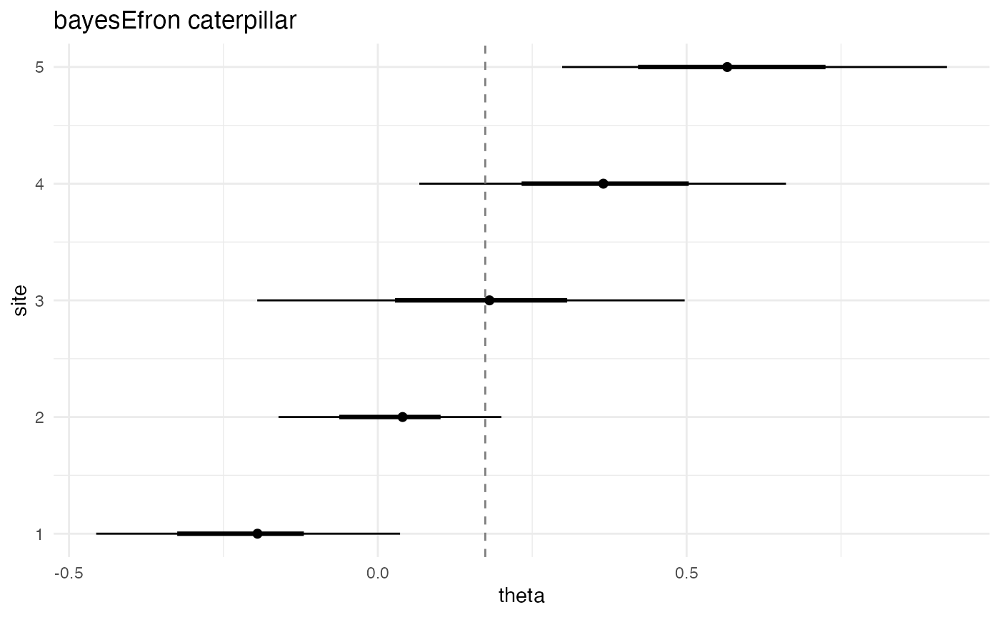

Problem framing
bayesEfron addresses the canonical univariate
random-effects meta-analytic deconvolution problem. For each of
sites the analyst observes a point estimate
and a within-study standard error
,
with
allowed to vary across sites (heteroscedastic). The generative
assumption is two-stage: the latent site effects
are drawn from a continuous mixing distribution
,
and the observed estimates satisfy
.
The package decomposes the meta-analyst’s question into two distinct inferential targets:
- The mixing distribution itself. A nonparametric density estimated through Efron’s log-spline prior on a fixed grid of effect-size values. This is the “population” distribution of true site effects.
- The per-site posteriors . Empirical-Bayes shrunken estimates, with each pulled toward by an amount that depends on .
A single call to bayes_efron_fit() returns both. The
remainder of this vignette walks through a five-site toy fit and reads
the two targets off the returned object.
Inputs
The toy dataset is five sites with effect estimates ranging from to and within-study standard errors between and .
Convert with as_bef_data()
The package’s input class normalizes the two parallel vectors and
records a source tag for provenance.
dat <- as_bef_data(list(theta_hat = theta_hat, sigma = sigma))
dat
#> <bef_data>
#> Sites: 5
#> Source: list
#> theta_hat: min -0.21; median 0.19; max 0.61
#> sigma: min 0.15; median 0.19; max 0.24The fit call
fit <- bayes_efron_fit(
theta_hat = c(-0.21, 0.04, 0.19, 0.38, 0.61),
sigma = c( 0.18, 0.15, 0.22, 0.19, 0.24),
L = 51L,
M = 3L,
chains = 1L,
iter_warmup = 150L,
iter_sampling = 100L,
seed = 1234L
)L = 51L is the discrete-grid resolution and
M = 3L is the natural-cubic-spline degrees of freedom; both
are deliberately small for a smoke-scale fit. The warmup and sampling
counts are short for the same reason. Substantive analyses raise these
to package defaults (four chains × 1000 warmup × 3000 sampling,
,
);
see the Scaling up section at the end.
Cached fixture
To keep this vignette free of a CmdStan dependency at render time we load a cached fixture produced by exactly the call above.
fit <- readRDS(
system.file("examples", "cached_fit_re_smoke.rds",
package = "bayesEfron")
)
class(fit)
#> [1] "bef_fit_re" "bef_fit"
summary(fit)
fit_summary <- summary(fit)
fit_summary
#> <summary.bef_fit>
#>
#> Prior g:
#> mean: 0.174
#> var: 0.2094
#> sd: 0.4549
#>
#> Diagnostics:
#> Rhat: 1.203
#> ESS bulk: 12.53
#> ESS tail: 105
#> Divergences: 0
#> Max treedepth: 0
#> Effective params: mean 0.3754, sd 0.3722
#> Log marginal lik.: mean -2.433, sd 0.443
#> Runtime: 0.2906 sec
#> Stan SHA-256: 57d1f55c8ccd721800193e61eb247f315be3afd401a19f58a51f84c103ceca3e
#>
#> Theta summary:
#> site mean sd lower upper map
#> 1 -0.1948 0.1713 -0.456 0.036 -0.1956
#> 2 0.0401 0.1471 -0.1608 0.2 0.03862
#> 3 0.1808 0.2128 -0.1952 0.4968 0.1787
#> 4 0.3652 0.1869 0.06716 0.6608 0.363
#> 5 0.5658 0.2197 0.2984 0.9216 0.5847The printed object has three blocks. Prior g holds the posterior-mean summary of the mixing distribution — the answer to target (1). Diagnostics reports Hamiltonian Monte Carlo health and the Stan-model fingerprint. Theta summary is the per-site posterior table — the answer to target (2).
The two targets, side by side
The same fit object carries the population-level and
site-level quantities. Pulling them into one table makes the contrast
explicit.
ps <- fit_summary$prior_summary
post_means <- coef(fit)
prior_row <- data.frame(
level = "Prior g (population)",
site = NA_integer_,
estimate = ps$mean,
scale = ps$sd,
note = "mean and sd of g(theta)"
)
site_rows <- data.frame(
level = "Posterior theta_i (per site)",
site = seq_along(post_means),
estimate = unname(post_means),
scale = fit_summary$theta_summary$sd,
note = "posterior mean and sd"
)
knitr::kable(
rbind(prior_row, site_rows),
digits = 3,
caption = paste(
"Two inferential targets from one fit:",
"the prior g (top row) and the per-site posterior latent",
"effects (rows 1-5)."
)
)| level | site | estimate | scale | note |
|---|---|---|---|---|
| Prior g (population) | NA | 0.174 | 0.455 | mean and sd of g(theta) |
| Posterior theta_i (per site) | 1 | -0.195 | 0.171 | posterior mean and sd |
| Posterior theta_i (per site) | 2 | 0.040 | 0.147 | posterior mean and sd |
| Posterior theta_i (per site) | 3 | 0.181 | 0.213 | posterior mean and sd |
| Posterior theta_i (per site) | 4 | 0.365 | 0.187 | posterior mean and sd |
| Posterior theta_i (per site) | 5 | 0.566 | 0.220 | posterior mean and sd |
Two patterns to read off the table. First, every posterior
estimate falls between the corresponding raw
and the prior mean of
— the shrinkage signature. Site 5, the most extreme observed estimate
(),
shrinks furthest in absolute terms toward the prior mean. Second, each
posterior scale value is smaller than the corresponding
,
reflecting the precision gain from partial pooling under
.
Caterpillar plot
The caterpillar plot reads the posterior table visually.
plot(fit, type = "caterpillar")
Per-site posterior latent effects with 90 percent credible intervals from the cached five-site smoke fit. Sites are ordered by site index.
The vertical scatter of the posterior means traces the rank order of the raw estimates; the interval half-widths reflect together with the regularization induced by .
Diagnostics, briefly
The cached fixture uses one chain with 100 sampling iterations — a
smoke-scale configuration. The Diagnostics block in
summary(fit) shows
and bulk ESS in the low teens, both well outside the conventional
release thresholds
(,
ESS
).
That is expected for a deliberately short run and is the reason this
configuration is reserved for compile-and-run verification, not for
inference. See the A5 · Diagnostics in practice
vignette for the diagnostic checklist used on substantive fits.
What’s next
Three follow-on vignettes carry the workflow forward:
-
A2 · Anatomy of a
bayesEfronfit — every field of the returned object, every S3 method on the parent / RE-child class hierarchy. -
A3 · From
metafor::escalc()to bayesEfron — the end-to-end path starting from group treatment / control summaries through a working fit and its outputs. - M1 · The empirical-Bayes deconvolution problem — the formal motivation for the log-spline prior, the role of fully Bayesian inference over Efron’s original empirical-Bayes formulation, and the connection to the broader literature.
Scaling up
The cached fit uses five sites, one chain, and 100 sampling iterations. Production analyses should:
- Use the package defaults (
L = 101,M = 6,chains = 4,iter_warmup = 1000,iter_sampling = 3000). - Confirm with bulk ESS above 400 for the posterior-of-interest summaries.
- Replace the toy vectors with
as_bef_data()applied to either a named list oftheta_hat/sigmaor ametafor::escalc()object — the A3 vignette walks through the latter.
The compile-and-cache layer ensures the Stan model is compiled once; subsequent fits with matching model source, package version, CmdStan version, and platform reuse the cached binary. The first call in a fresh session pays the compilation cost (typically tens of seconds); later calls do not.